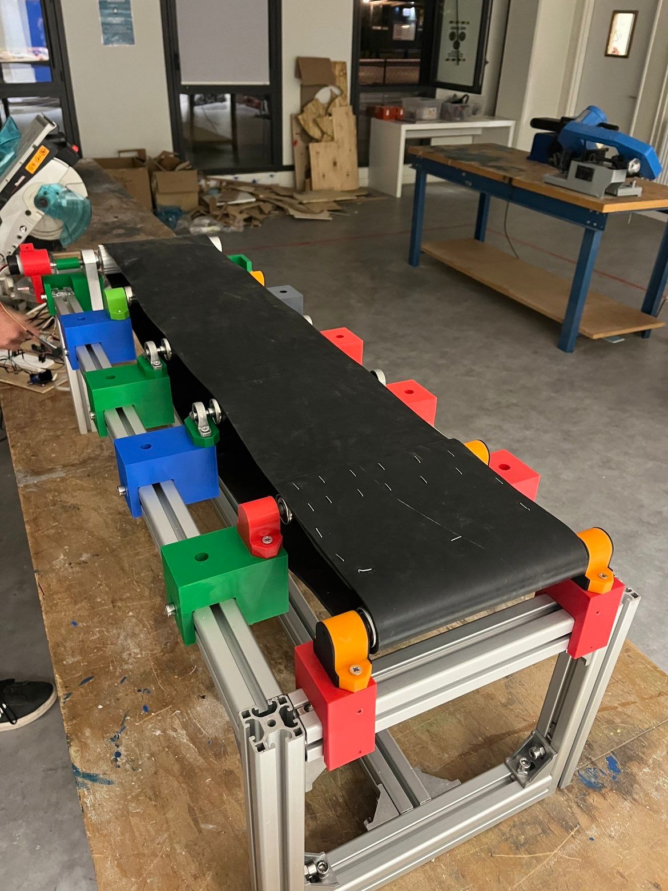
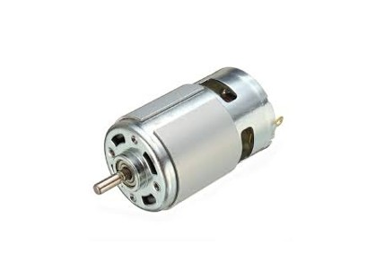
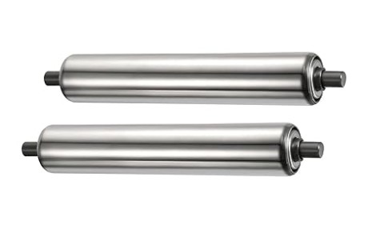
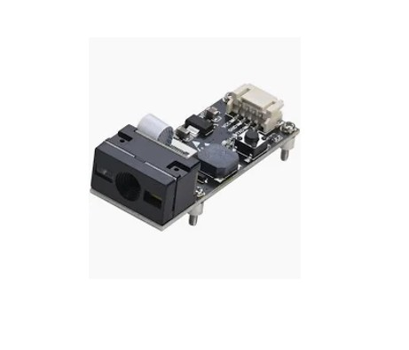
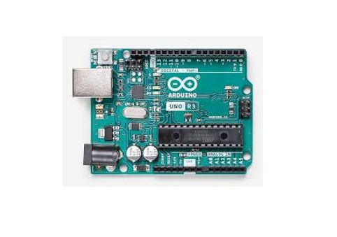
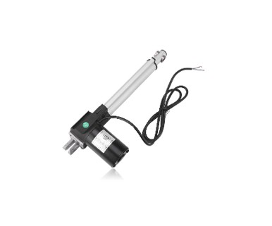
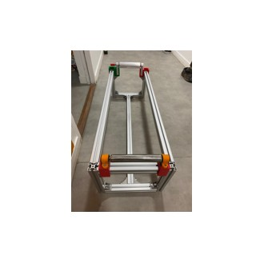
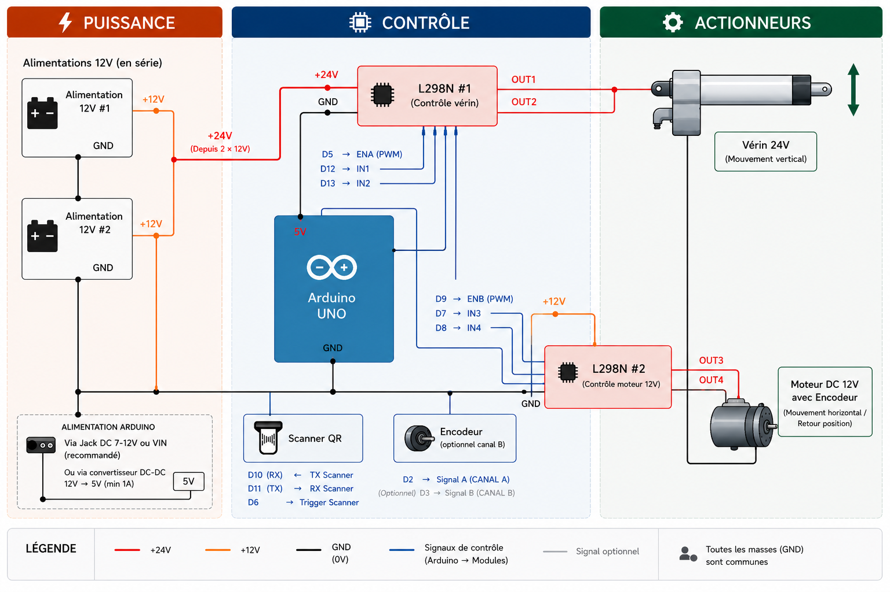
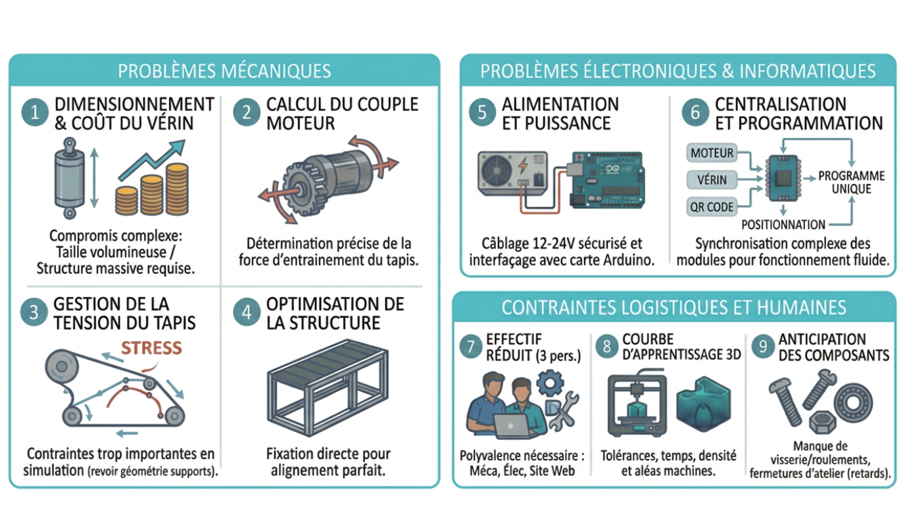
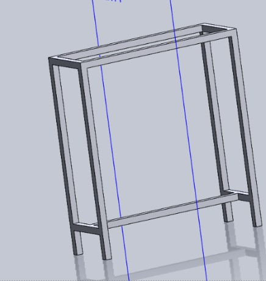

Paul Dulcire
Chef de ProjetCoordination générale, responsable électronique et intégration de l'électronique sur le châssis.
Conception, démonstration et analyse d'un convoyeur 1 m × 30 cm, charge max 1 kg. Intégration mécanique, électronique.

Projet étudiant avec la mise en pratique des compétences en conception mécatronique, électronique avec l'intégration d'Arduino.
Le convoyeur intègre quatre sous-systèmes interdépendants : motorisation, structure, détection et contrôle. Chaque composant a été sélectionné pour ses performances et sa disponibilité.

Moteur à courant continu 12 V, couple suffisant avec marge 20–30 % pour les charges nominales. Piloté via pont-H.

Rouleaux sur roulements à billes pour minimiser les frottements. Dimensionnés pour une flèche < 2 mm sous charge max.

Capteur de lecture QR Code pour identification des objets transportés. Permet un tri et un suivi automatisé.

Microcontrôleur central : gestion du PWM, lecture des capteurs.

Actionneur linéaire 24 V pour l'éjection latérale des objets triés selon leur QR Code. Course contrôlée.

Profilés aluminium : rapport rigidité/poids optimal, assemblage modulaire, adaptation facile des composants.
Profilés aluminium pour le meilleur rapport rigidité/poids. Rouleaux montés sur roulements à billes. Dimensionnement par calcul de flèche et vérification du couple requis.
Driver pont-H L298N pour le pilotage bidirectionnel. Capteur QR code pour trier les objets.
Validation expérimentale : stabilité de vitesse, temps de transport mesuré, niveau sonore, consommation. Tests sur plage de charge 0,2 à 1 kg.


Utilisation d'aluminium recyclé et de composants en PLA (bioplastique) pour les pièces de support.
Nous avons privilégié un usinage simple et un assemblage entièrement démontable. Cette conception facilite le transport et permet au système de s'adapter à différents types d'industries.
Le programme d'automatisation a été conçu pour être fiable, autonome et performant, permettant un fonctionnement théorique 24h/24.
Grâce à sa démontabilité totale, chaque composant du convoyeur peut être trié et valorisé de manière indépendante en fin de cycle.

Coordination générale, responsable électronique et intégration de l'électronique sur le châssis.
Suivi des livrables, planification et suivi des séances et conception mécanique.
Conception mécanique.